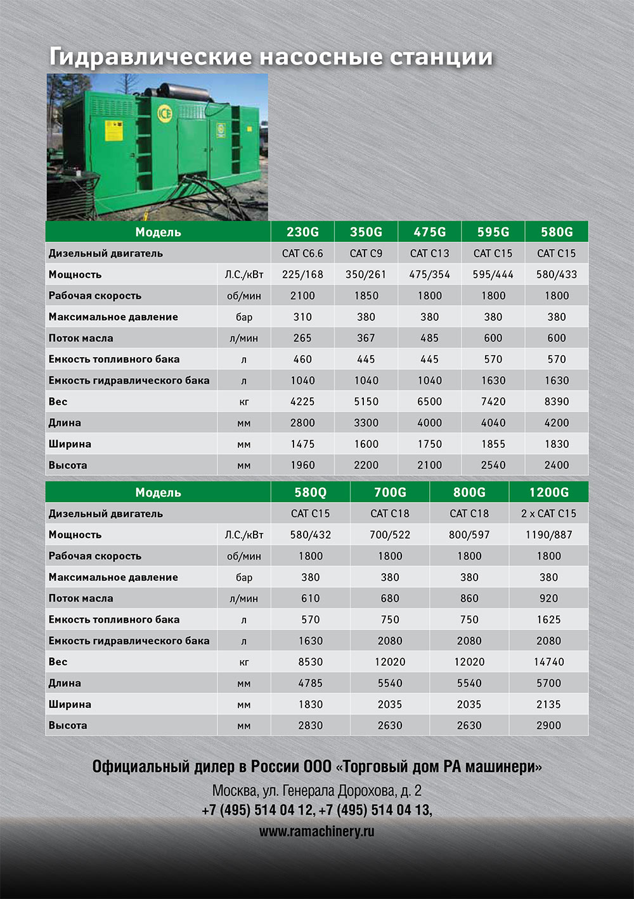

ICE Inc
ICE 700G
Гидравлические насосные станции
Автономные дизельные станции для питания гидравлического оборудования.
- Масса
- 12020 кг
- Мощность
- 700/522 л.с./кВт


Технический лист серииОткрыть чертёж и таблицуТехнические характеристики
- Дизельный двигатель
- CAT C18
- Мощность
- 700/522 л.с./кВт
- Рабочая скорость
- 1800 об/мин
- Максимальное давление
- 380 бар
- Поток масла
- 680 л/мин
- Ёмкость топливного бака
- 750 л
- Ёмкость гидравлического бака
- 2080 л
- Масса
- 12020 кг
- Длина
- 5540 мм
- Ширина
- 2035 мм
- Высота
- 2630 мм